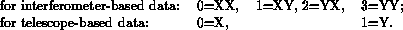

<HEAD>
<TITLE>No Title</TITLE>
</HEAD>
<BODY><P>
 <b>The Program NGCALC</b>  
<A NAME=.contents></A>
<P><H2><A NAME=SECTION0001000000000000000>Contents</A></H2>
<UL> 
<LI> <A NAME=tex2html1 HREF=ngcalc_descr.html#SECTION0001000000000000000>Contents</A>
<LI> <A NAME=tex2html2 HREF=ngcalc_descr.html#SECTION0002000000000000000>  <b>General</b></A>
<LI> <A NAME=tex2html3 HREF=ngcalc_descr.html#SECTION0003000000000000000>  <b>The .NGF file</b></A>
<LI> <A NAME=tex2html4 HREF=ngcalc_descr.html#SECTION0004000000000000000>  <b>General features of the parameter interface</b></A>
<UL> 
<LI> <A NAME=tex2html5 HREF=ngcalc_descr.html#SECTION0004100000000000000>  <b>Special use of NGF_LOOPS</b></A>
<LI> <A NAME=tex2html6 HREF=ngcalc_descr.html#SECTION0004200000000000000>  <b>The DELETE and COPY options</b></A>
<LI> <A NAME=tex2html7 HREF=ngcalc_descr.html#SECTION0004300000000000000> <b>New cuts created by combining input cuts</b></A>
<LI> <A NAME=tex2html8 HREF=ngcalc_descr.html#SECTION0004400000000000000>  <b>Inspecting the contents of an .NGF file</b></A>
</UL> 
<LI> <A NAME=tex2html9 HREF=ngcalc_descr.html#SECTION0005000000000000000>  <b>Extracting data from a .SCN file</b></A>
<LI> <A NAME=tex2html10 HREF=ngcalc_descr.html#SECTION0006000000000000000>  <b>Merging cuts</b></A>
</UL>
<A NAME=.general></A>  
<H1><A NAME=SECTION0002000000000000000>  <b>General</b></A></H1>
<P>
        NGCALC is a program for extracting information from .SCN-file data and then manipulating it in a great variety of ways. The data may be either interferometer-based (visibilities) or telescope-based (e.g. corrections).
<P>
        This document is still far from complete, but it is hoped that it gives you somethging of a handle to start exploring on your own the many possibilities that NGCALC offers.
<P>
<A NAME=.ngf.file></A>  
<H1><A NAME=SECTION0003000000000000000>  <b>The .NGF file</b></A></H1>
<P>
        The extracted data are organised and manipulated in a special type of file, the <em>.NGF file</em>.
<P>
        The .NGF file contains a collection of <em>cuts</em> i.e. vectors representing the values of some quantity as a function of either hour angle or frequency. (You may still come across the term <em>plots</em> for these cuts, - and corresponding the the .NGF file may be referred to as a <em>plot file</em> -, but this unfortunate terminology is being phased out.) Each cut has a header containing relevant parameters such as interferometer designation, bandwidth, center frequency, hour-angle range etc.
<P>
        The cuts are organised in an index structure similar to that for sectors in a .SCN file and maps in the .WMP file. The order of the indices is
<P>
  &lt;grp&gt;.&lt;fld&gt;.&lt;chn&gt;.&lt;pol&gt;.&lt;iort&gt;.&lt;seq&gt;
<P>
For each cut, the index is derived automatically from the index of the sector from which the data are taken. This is shown schematically in  
<A HREF=" #.ngf.scn.indices">figure</A> and explained below:
<P>
<A NAME=.ngf.scn.indices></A> Derivation of .NGF-file cut indices from .SCN-file sector indices 
<A HREF="../fig/ngf_scn_indices.ps"><STRONG>FIGURE</STRONG></A> 
 .]<i><BR>This diagram schematically indicates how the cut indices in the .NGF file are related to the sector indices in the .SCN file, - which in turn are derived from the hierarchical structure of the WSRT observation file. </i>
<P>
<UL><LI>   The &lt;grp&gt; (<em>group</em>) numbers are automatically assigned in sequential order. A group generally contains all cuts produced in a single run of NGCALC. In extracting data from a .SCN file, different input groups and/or observations are mapped to different output groups.  
<LI>   &lt;fld&gt; (<em>field</em>) and  
<LI>   &lt;chn&gt; (<em>channel</em>) are those for the data in the .SCN file from which the cut was made.  
<LI>   &lt;pol&gt; (<em>polarisation</em>) is a fixed code:
<P>
<P><P>
<P>
<LI>   &lt;iort&gt; (<em>interferometer</em>for interferometer-based data) is a sequence number whose only function is to distinguish cuts for different interferometers. In general, you will use this index only in specifying 
<A HREF="#.loops"><b>loops</b></A> to process interferometers one by one; for <em>selecting</em>interferometers, the SELECT_IFRSparameter is more convenient  
<LI>   &lt;iort&gt; (<em>telecsope</em>for telecope-based data) is analogous to that for interferometers and the remarks made above on its use apply here as well; in particular, the index value does <em>not</em>necessarily correpond to the telescope number.  
<LI>   &lt;seq&gt; (<em>sequence number</em>) is a number making it possible to have several different kinds of cut with all preceding indices identical.  
</UL>
<P>
<A NAME=.ngcalc.interface></A> Overview of NGCALC's parameter interface. 
<A HREF="../fig/ngcalc_interface.ps"><STRONG>FIGURE</STRONG></A> 
 .]<i><BR><BR>See also: 
<BR><A HREF=" #.ngcalc.extract">figure</A> for details of the <em>EXTRACT</em> operation 
<BR><A HREF=" #.ngcalc.display">figure</A> for details of the display operations </i>
<P>
<A NAME=.ngcalc.extract></A> NGCALC's cut-extract interface. 
<A HREF="../fig/ngcalc_extract.ps"><STRONG>FIGURE</STRONG></A> 
 .]<i><BR><BR>See <A HREF=" #.ngcalc.interface">figure</A> for the overall interface. </i>
<P>
<A NAME=.ngcalc.display></A> NGCALC's header/data display interface. 
<A HREF="../fig/ngcalc_display.ps"><STRONG>FIGURE</STRONG></A> 
 .]<i><BR><BR>See <A HREF=" #.ngcalc.interface">figure</A> for the overall interface. </i>
<P>
<A NAME=.general.features></A> 
<H1><A NAME=SECTION0004000000000000000>  <b>General features of the parameter interface</b></A></H1>
<P>
<A NAME=.loops></A> 
<H2><A NAME=SECTION0004100000000000000>  <b>Special use of NGF_LOOPS</b></A></H2>
<P>
        In certain operations, sets of input cuts are combined to produce some output, e.g. some statistic as in the CALC option, or a new cut as in the MERGE option. To process such sets per interferometer, the 
NGF_LOOPS parameter may be used to loop over the interferometers one by one by specifying an increment for the <A HREF="#.ngf.file"><b>iort index</b></A>, e.g.
<P>
  NGF_LOOPS = 65, ....1
<P>
If you do not know the number of interferometers, you may have all of them processed by their number as 91 (the largest possible number) or higher.
<P>
<A NAME=.delete></A> 
<H2><A NAME=SECTION0004200000000000000>  <b>The DELETE and COPY options</b></A></H2>
<P>
        It is rather easy to make mistakes in defining operations that combine cuts. To get rid of the resultant clutter in an .NGF file, NGCALC offers the option to DELETE (sets of) cuts. The data are not actually deleted but simply disconnected from the index structure which makes them invisible; be careful: this process is <em>irrevrsible</em>!
<P>
        Deleted data may still occupy more disk space than you want. The 
COPY operation may be used to create a new .NGF file from which the deleted data along with the corresponding index structures are actually removed.  The indices of valid data are copied unchanged, so e.g. the group numbers in the output file may form a non-contiguous series.
<P>
<A NAME=.combine></A> 
<H2><A NAME=SECTION0004300000000000000> <b>New cuts created by combining input cuts</b></A></H2>
<P>
        Several options, such as MERGE and COMBINE, combine data from multiple input cuts to create new cuts. In such cases, NGCALC tries to assign sensible values to the output cut's header parameters, but one cannot rely blindly on them.
<P>
        The TRANS and BASE operations transpose data in the three-dimensional hour-angle/baseline/frequency-channel data cube. The cuts for the transposed data mostly use the same header parameters as the original cuts and some educated guessing may be necessary to figure out what these parameters mean.
<P>
<A NAME=.inspect></A>  
<H2><A NAME=SECTION0004400000000000000>  <b>Inspecting the contents of an .NGF file</b></A></H2>
<P>
        The BRIEF and FULL options can be used to inspect the composition of your file. BRIEF provides a quick survey, FULL gives details per individual cuts. Since the number of cuts in a file may be quite large, the recommended way to explore a .NGF file is to start with  
BRIEF and use FULL only to get details about one or a few cuts.
<P>
<A NAME=.extract></A>  
<H1><A NAME=SECTION0005000000000000000>  <b>Extracting data from a .SCN file</b></A></H1>
<P>
        The first step in using NGCALC is to extract the necessary data from one or more .SCN files and store it in an .NGF file. The number of output cuts equals the number of input sectors times the numer of selected interferometers; so in cases where the former is already considerable you should think carefully about what you need.
<P>
The mapping of the .SCN-file sector indices to .NGF-file cut indices is shown schematically in a diagram <A HREF=" #.ngf.scn.indices">figure</A>.
<P>
<A NAME=.merge></A> 
<H1><A NAME=SECTION0006000000000000000>  <b>Merging cuts</b></A></H1>
<P>
        The MERGE option enables you to merge a set of cuts into a new one; the NGF_LOOPS parameter may be used to execute a whole series of mergers in a single operation.
<P>
        In the merge algorithm, the input cut data are sorted in hour-angle bins .25 deg wide and averaged per bin. The resulting output is stored in a contiguous sequence of points equidistant at .25 deg, long enough to hold the data; see <A HREF=" #.ngcalc.merge">figure</A>.
<P>

<P>.

<P>.

<P>.

<P>.

<P>.

<P>.

<P>.

<P>.

<P>.

<P>.

<P>.

<P>.

<P>.

<P>.

<P>.

<P>.

<P>.

<P>.

<P>.

<P>.

</BODY> </HTML> 
<HR>

</BODY>
<P><ADDRESS>
newstar@nfra.nl
